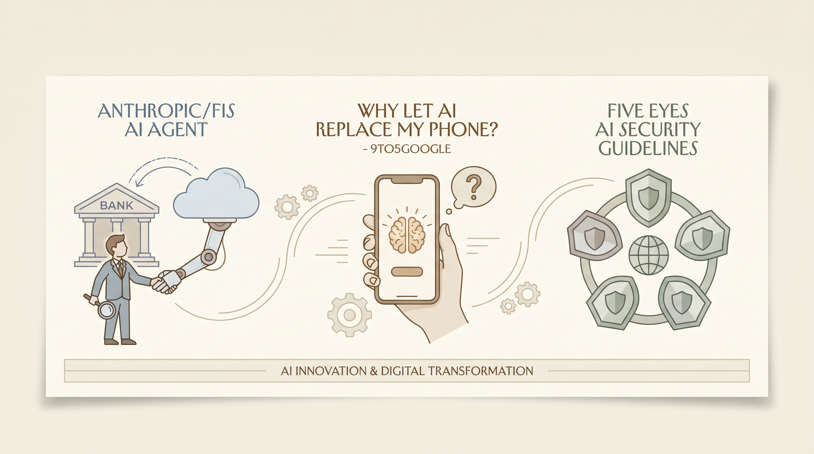

Anthropic与FIS合作开发AI代理，协助银行打击金融犯罪。
两克伴AIGC日报
2026-05-05 星期二

本期关注：五眼情报联盟发布首份协调AI安全指南，强调部署代理AI时优先韧性；Anthropic与FIS合作开发金融犯罪打击AI代理，OpenAI计划推出搭载AI代理的智能手机；用户实践显示ChatGPT/Gemini显著提升生活工作效率，Smile-Serve等推理服务器推动多模型落地。
📰 行业动态
OpenAI计划推出搭载AI代理的智能手机。
🔥 今日焦点
五眼情报联盟机构近日发布了首个关于代理人工智能（Agentic AI）的多国安全指导。美国网络安全和基础设施安全局（CISA）、英国国家网络安全中心（NCSC）及其澳大利亚、加拿大和新西兰的对应机构共同发布了指导文件，建议组织在部署自主代理时优先考虑韧性而非生产力。此次威胁模型从模型级风险转向系统级自主风险，属于完全不同的问题类别。对于在生产环境中推送代理管道的团队而言，这被视为合规的预信号，而非简单推荐。同时，Anthropic公布了其针对Claude的自动化谄媚分类器的工作原理，该分类器用于衡量模型在挑战下是否维持立场并调整赞美以符合价值，揭示了前沿实验室的进展。
这一指导的重要性在于，它标志着对代理AI安全性的首次国际协调努力，为AI领域提供了重要的安全框架。它对AI领域的影响深远，因为它强调了在部署AI代理时必须关注系统级风险，而非仅仅关注模型本身的风险。这不仅对AI开发者提出了新的挑战，也为监管机构提供了参考，有助于制定更全面的安全标准和政策。此外，Anthropic的研究成果也揭示了AI模型在处理复杂任务时的潜在问题，对AI伦理和透明度提出了更高的要求。
标题：全面拥抱ChatGPT和Gemini：工作效率与生活便利的双重提升
近日，Reddit用户u/brainhack3r分享了自己将ChatGPT和Gemini应用于日常生活和工作中的经历，感叹其带来的巨大改变。作者表示，通过使用这两款AI工具，他在完成工作、节省时间方面都取得了显著成效。
SMILE Serve是一款基于Quarkus构建的生产级推理服务器，旨在JVM平台上整合三种互补的推理能力。该服务器支持经典机器学习模型、ONNX格式模型以及大型语言模型（LLM）的聊天完成功能。具体而言，它提供了以下功能：
- **经典ML**：通过`/api/v1/models`接口，支持对序列化的SMILE模型（`.sml`）进行推理；
- **ONNX Runtime**：通过`/api/v1/onnx`接口，兼容任何ONNX开放格式的模型（`.onnx`）；
- **LLM Chat**：通过`/api/v1/chat`接口，提供Llama 3聊天完成的推理服务。
📚 深度长文
🛠️ 产品推荐
Show HN：I built a native macOS audio player and it changed my life，这是一款专为macOS系统设计的原生音频播放器。该产品通过简洁直观的操作界面，为用户提供了流畅的音频播放体验。通过 Claude Code 的助力，这款播放器不仅提升了用户的音乐享受，更重新点燃了开发者对编程的热情。这款播放器能够有效解决用户在macOS系统上寻找一款高效、易用的音频播放工具的需求，为用户带来便捷、愉悦的音乐体验。
---
Dust3D 1.0是一款历经十年磨砺的低多边形3D建模工具。该工具具备跨平台特性，专为简化3D建模流程而设计。通过引入GitHub Copilot等AI技术，Dust3D 1.0能够大幅提升建模效率，降低用户技术门槛。其核心功能包括丰富的模型库和便捷的操作界面，助力用户轻松创作出高质量的低多边形3D模型。对于技术从业者而言，Dust3D 1.0将成为一款高效、实用的3D建模利器。
---
Kanban-CLI是一款基于Markdown的本地待办事项清单Web UI工具。该产品通过将Markdown文件转换为可视化看板，帮助用户组织、规划和跟踪任务进度。Kanban-CLI旨在降低外部SaaS支出，将项目文档、待办事项等传统外部资源整合至单一代码库中，提高工作效率。对于技术从业者而言，Kanban-CLI能够有效解决本地Markdown待办事项管理难题，实现任务进度可视化，提升项目管理效率。